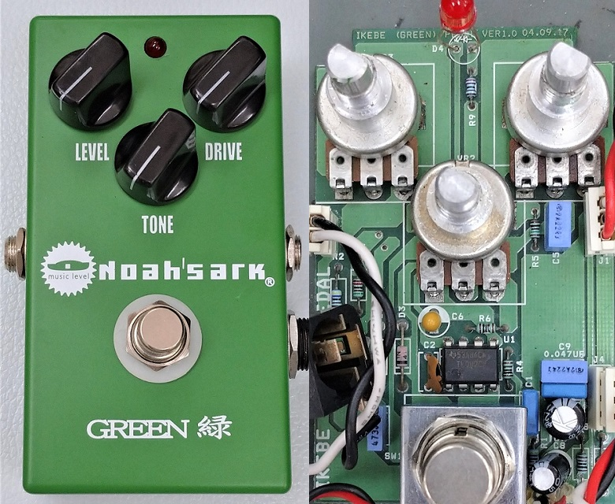
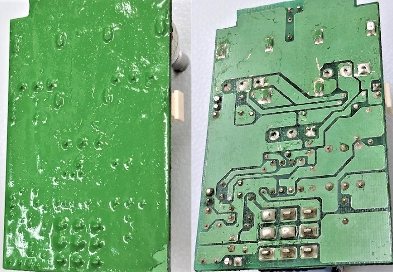
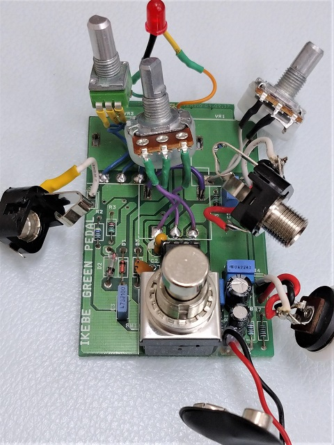
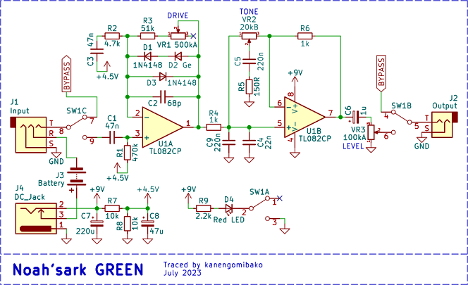
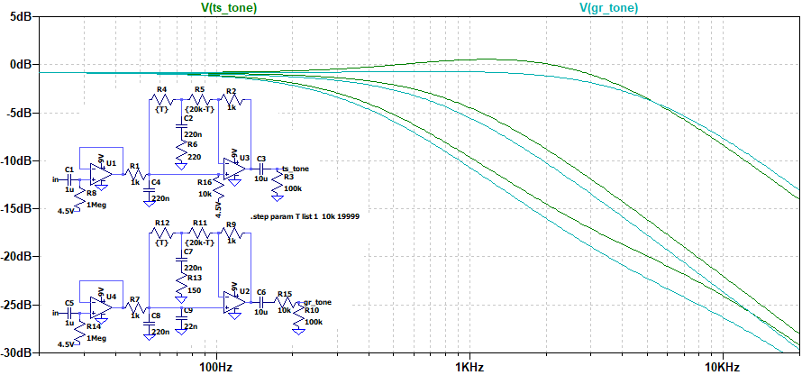

Noah'sark GREEN 解析
2023年08月16日 カテゴリー：修理・改造・解析

Noah'sarkのエフェクターは、基板裏面がモールドされています。このモールドを剥がすのに挑戦してみたくなったため、中古で「GREEN」を入手し解析することにしました。KiCadデータはGitHubにあります。

まず燃料用アルコール（主成分メタノール）に1日つけておきました。すると、基板裏を覆っていた樹脂状のものは爪で剥がせる程に軟化しました。あっけなく回路トレースは完了しましたが、別の問題が発生しました。何も考えずにポットがついたままの基板を丸ごと燃料用アルコールに漬けておいたため、ポットの抵抗値が数倍に増えていました。おそらく導体成分が溶け出してしまうのだと思われます。メタノールはポットに付着しないようにすると共に、他の部品も何らかの性質変化が起こるリスクがあることを覚悟しておかなければいけません。

ポットはDシャフトのものを購入し交換しました。内部スペースがギリギリになったので、小型ジャックに交換したりコネクタなしで直付けにしたりするなど、結構手間がかかってしまいました。
▽回路図

少し定数を変えてありますが、バッファなしのチューブスクリーマーという感じです。型番不明のダイオードD2は、ゲルマニウムダイオードと思われます。
・参考ページ→ ElectroSmash - Tube Screamer Analysis
▽シミュレーション
・TONE周辺

チューブスクリーマーとの比較です。高音域のカットが少し多くなっています。